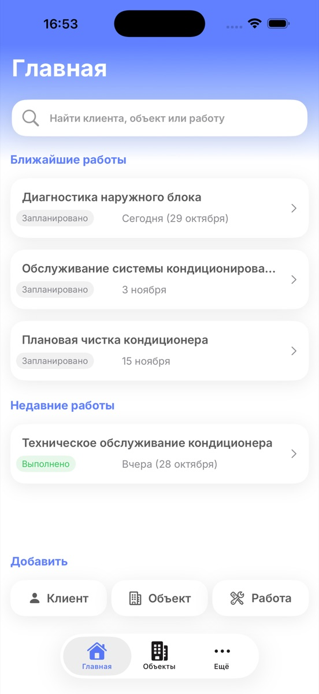
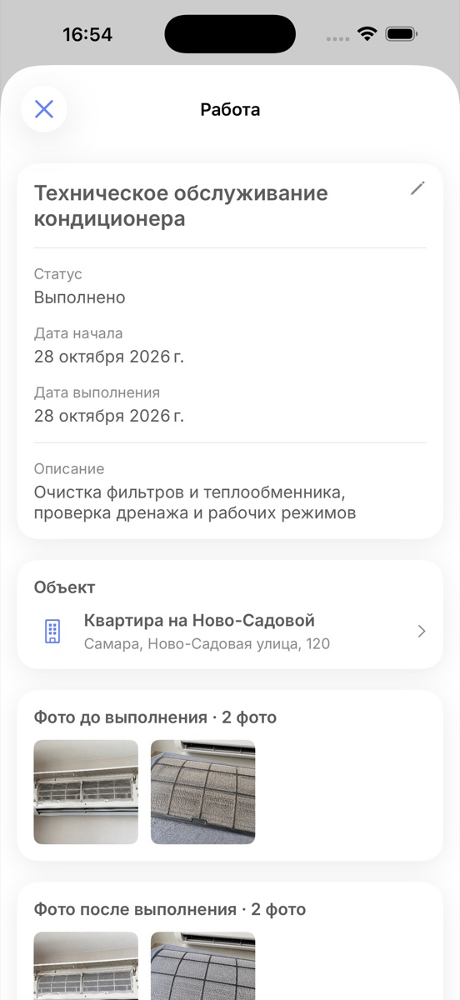
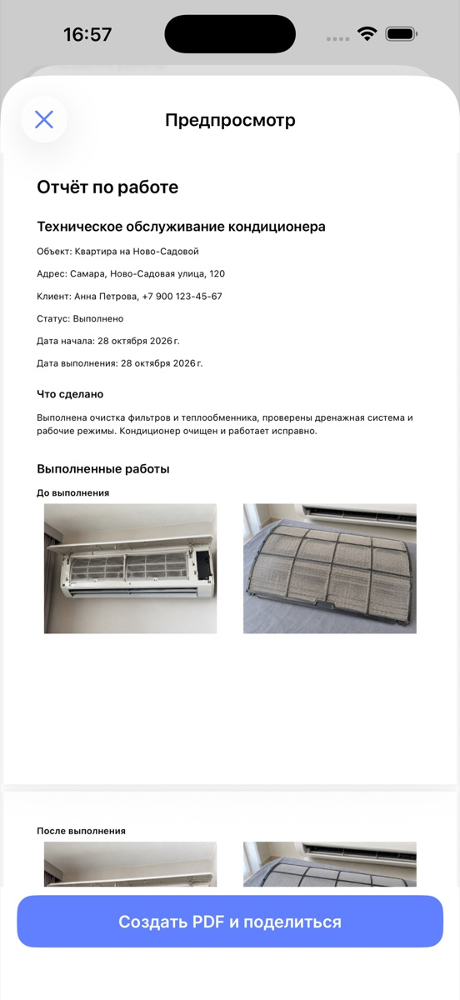

Клиенты и объекты
Контакты, адреса, заметки и вся история работ по каждому объекту.
Доступно в App Store
ObjectLog помогает мастерам и выездным специалистам вести клиентов, объекты и работы, хранить фотографии и готовить понятные отчёты.
Без регистрации и подписки. Основные данные хранятся локально на устройстве.

Всё необходимое в одном месте
ObjectLog связывает клиента, объект и выполненную работу в единую понятную историю.
Контакты, адреса, заметки и вся история работ по каждому объекту.
Статусы, даты и описание помогают видеть ближайшие и завершённые задачи.
Фотографии сохраняются прямо в карточке работы и остаются рядом с её описанием.
Соберите результат работы с описанием и фотографиями и отправьте его клиенту.
Вся история на месте
Откройте объект, чтобы увидеть связанные работы. В каждой работе хранятся даты, статус, описание и фотографии результата.

Результат для клиента
Выберите нужные фотографии, добавьте описание и сформируйте PDF. Готовым файлом можно поделиться через стандартное меню iOS.

Локальный подход
ObjectLog не требует учётной записи. Клиенты, объекты, работы, фотографии и отчёты хранятся локально. Пользователь сам выбирает, что экспортировать или отправить.
Приложение уже доступно для iPhone в App Store.